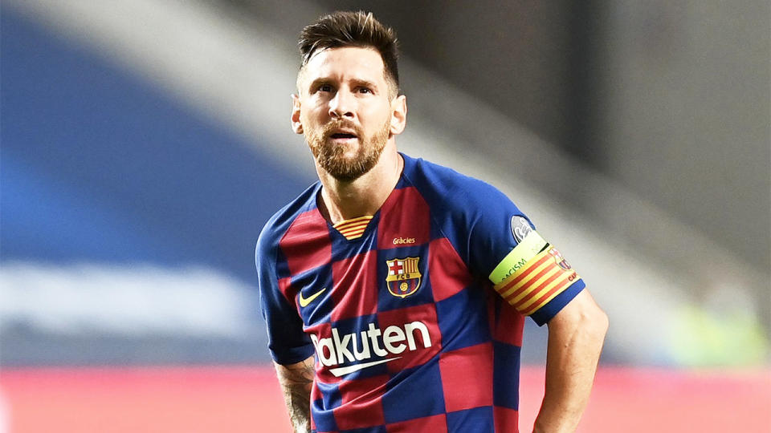
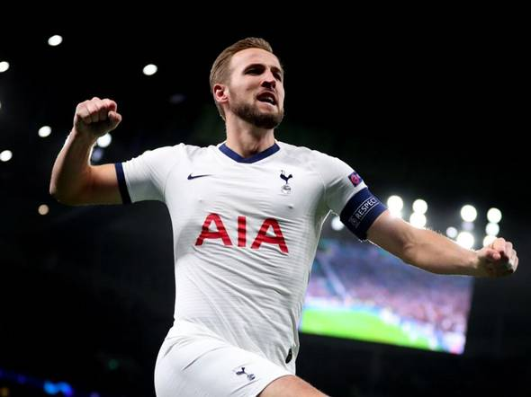
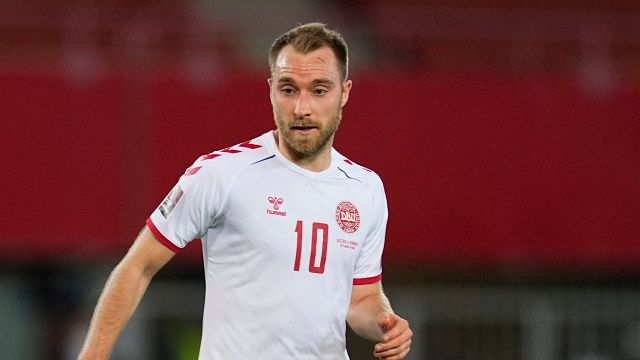
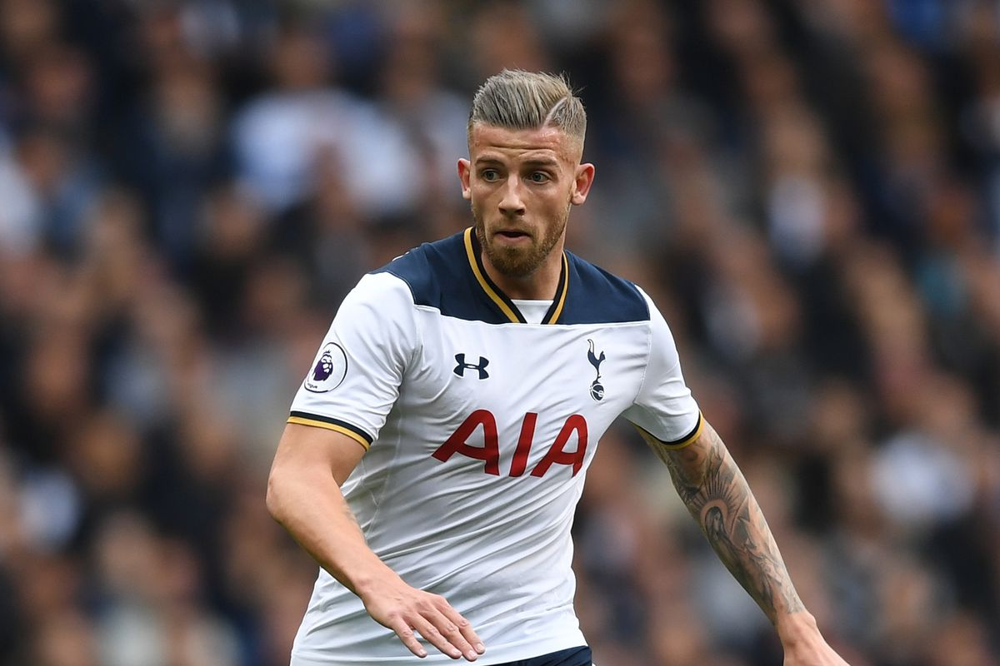
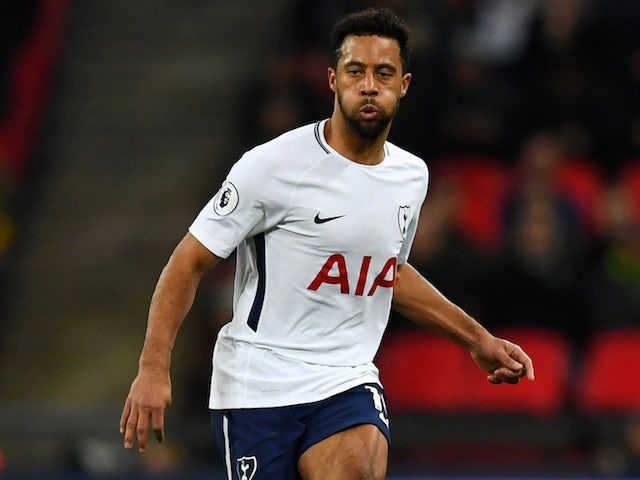

Place for best players in the world
Lionel Messi
Родился 24 июня 1987, Росарио, Аргентина — аргентинский футболист, нападающий и капитан сборной Аргентины. Лучший бомбардир в истории чемпионата Испании, «Барселоны» и сборной Аргентины. Признаётся одним из лучших футболистов всех времён. Шестикратный обладатель «Золотого мяча» и «Золотой бутсы». Воспитанник академии «Барселоны», в составе первой команды выступает с 17 лет. С тех пор вместе с клубом выиграл десять титулов чемпиона Испании, четыре Лиги чемпионов УЕФА, семь Кубков Испании, восемь Суперкубков Испании, три Суперкубка Европы и три чемпионата мира среди клубов.
Hurry Kane
Английский футболист, нападающий и вице-капитан клуба «Тоттенхэм Хотспур» и капитан национальной сборной Англии. Член ордена Британской империи.Гарри Кейн является воспитанником академии «Тоттенхэм Хотспур». Футбольную карьеру игрок начал с 22-х матчей за лондонскую команду до 18 лет в сезоне 2009/10, по итогам которого на счету Кейна было 18 забитых мячей. В том же сезоне нападающий дважды был включён в состав основной команды в качестве запасного — в Кубке футбольной лиги против «Эвертона» 27 октября 2009 года и в 4-м раунде Кубка Англии в переигровке с «Болтоном» 24 февраля 2010 года.
Christian Eriksen
Датский футболист, атакующий полузащитник итальянского клуба «Интернационале» и сборной Дании. Полуфиналист чемпионата Европы 2020 года. Ранее выступал за молодёжный состав датского «Оденсе», а также за «Аякс» и «Тоттенхэм Хотспур». Четырежды (2013, 2014, 2015, 2018) признавался лучшим футболистом года в Дании.
Toby Alderveireld
Бельгийский футболист, центральный защитник английского клуба «Тоттенхэм Хотспур» и национальной сборной Бельгии. Воспитанник академии амстердамского «Аякса». В основном составе «евреев» дебютировал в 2008 году. Во время игры в Нидерландах выступал на позиции центрального защитника, крайнего защитника и фуллбэка, трижды завывал чемпионский титул и становился обладателем кубка 2010 года. В 2013 году был куплен мадридским «Атлетико». После успешно проведённого мирового первенства, перебрался на правах аренды в «Саутгемптон». Летом 2015 года Тоби стал игроком «Тоттенхэма». Участник двух чемпионатов мира (2014, 2018) и чемпионата Европы (2016).
Mousa Dembele
Бельгийский футболист, полузащитник клуба «Гуанчжоу Фули» и сборной Бельгии. 12 августа 2010 года перешёл в «Фулхэм», подписал контракт до 2013 года, клуб заплатил за него £5 млн. Получил 30 номер. Первый гол забил в матче против клуба «Порт Вейл» в рамках Кубка Лиги. Летом 2012 года перешёл в лондонский «Тоттенхэм Хотспур», где получил 19 номер. В сезоне 2018/2019 сыграл 10 матчей в АПЛ и 2 в Лиге Чемпионов. В январе 2019 года перешел из «Тоттенхэма» в китайский клуб «Гуанчжоу Фули».